TECHVESTVENTURES DAILY RISK ALERTS — Emergent News Digest — Nov 21, 2026, 9:00 AM EST ALL RISK REPORTS click TVV Risk Center
TVV RESEARCH DIGEST — November 21, 2026 — 13 desks
Prioritized Risk Summary November 21, 2026
| Sections Ranked for Importance Today | |
|---|---|
| STOCKS | S&P 500 and Dow in correction after worst week in over a year; Nasdaq negative for 2026 |
| GEOPOLITICS | Russian missiles land in NATO Poland; Hormuz attacks at wartime high |
| PREDICTIONS | Bettors put AI-bubble-burst odds at 70% by year-end, up from 9% a month ago |
| DERIVATIVES | Bitcoin at two-year low wipes out $2.4B of bets; data-center loan auction stalls |
| TECHNOLOGY | Nvidia down 23% on the week amid governance turmoil; Apple now favored as largest |
| ECONOMY | Fed hawks push hikes as Treasury yields fall on haven demand |
| TERROR | FBI, DHS, TSA warn airlines of al-Qaeda calls for copycat hijackings |
| COMMODITY | Gold down 9.5% on the week, copper in bear market, oil falls a third week |
| HEALTH | Virginia reports first measles death of 2026; US cases near 6,000 |
| AI BOOST | Google seen holding the top AI model; boardroom AI focus shifts to cyber |
| INFRASTRUCT | Strikes push Sudan's and Ukraine's grids toward collapse before winter |
| SPACE | Two coronal holes face Earth; forecast stays below G1 storm level |
| QUAKES | M6.7 Peru and M6.8 Timor-Leste quakes with no damage reported |
1. Major Geopolitical Conflict Developments
- ★ NATO soil hit: two Russian missiles, one a Kh-101 cruise missile, and a suspected jet-powered drone came down in southeastern Poland during Russia's overnight barrage on Ukraine; no injuries were reported. Prime Minister Tusk called it a likely intentional provocation timed to European military exercises in Poland for a possible postwar Ukraine mission. Poland scrambled jets and activated Patriot batteries but has not invoked NATO Article 4. AP · Reuters · Al Jazeera
- ★ The same night, Zelenskyy said Russia fired more than 400 drones and at least 110 missiles, including 27 ballistic missiles, one of the heaviest bombardments of the war; at least eight civilians were killed. ABC reports Russian attacks on Ukraine's energy grid are intensifying ahead of winter. Al Jazeera · ABC News
- ★ Hormuz attacks at a wartime high: UKMTO counted 31 attacks in and around the strait in October and about 19 in November through Nov 18, versus 10 to 15 a month from March to September; the IMO confirms 34 for October-November. Shipping was about 65% below pre-war levels in the week to Nov 18 (263 transits). Analysts say Iran aims to make the US-facilitated Omani route costly and unreliable. ABC News · Iran International
- ★ Conflicting Hormuz claims Saturday: UKMTO reported a tanker hit by an unidentified projectile 11 nautical miles north of Oman's Khasab and a tanker hit in the engine room 17 nm east of Khasab, possibly the same vessel; Iran's navy says a tanker caught fire after hitting a mine east of the strait. Reuters could not verify the Iranian account. Iran separately claims it downed US drones over Hormuz. CNBC · Al Jazeera
- ★ Diplomacy stalled: Axios reports Witkoff and Kushner met Qatari mediators on Iran talks; Araqchi says Iran wants diplomacy to end the war while Trump calls the terms unacceptable; Iran's foreign minister says a case for changing Iran's nuclear doctrine has "strong logic." Bettors cut odds of a US invasion of Iran to 7.5% and a Kharg Island seizure to 4.2%, and give a nuclear deal 5% (see graph). Axios · Reuters · RFE/RL · Polymarket
- ★ Taiwan after the summit: CNBC reports US-China trade, Taiwan and tech tensions remain unresolved as Trump returns from Asia, after Xi told Trump the US must do "the right thing" on Taiwan to avoid "great turbulence." CNBC
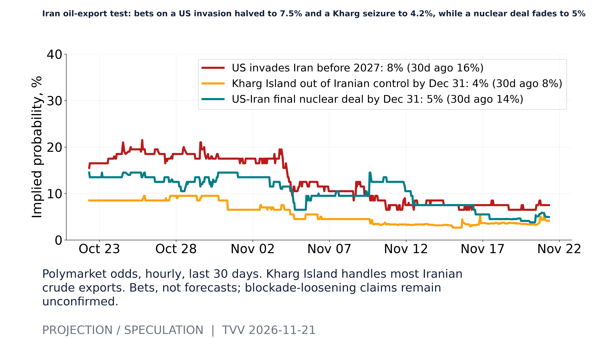
Iran oil-export test: bets on a US invasion halved to 7.5% and a Kharg seizure to 4.2%, while a nuclear deal fades to 5%. Polymarket odds, hourly, last 30 days. Kharg Island handles most Iranian crude exports. Bets, not forecasts; blockade-loosening claims remain unconfirmed. [Projection/Speculation; data as of 2026-11-21 07:44 ET] Source: polymarket.com data page
2. Major Terror / Security Incidents
- ★ Thanksgiving aviation warning: the FBI, DHS and TSA told airlines, cargo carriers and airports that al-Qaeda affiliates are praising September's attempted hijacking of flydubai flight FZ1073 and urging copycat attacks on US, Israeli and Jewish targets. The bulletin flags insider risks such as missing badges, radios and uniforms; a law-enforcement source says there is no known specific, credible threat and screening is unchanged. The Contrail · KHOU
- ★ Plot foiled: US authorities arrested a man in an ISIS-inspired mass-shooting plot targeting the Mall of America. In the UK, Mikka Anderson of Hull was convicted of planning a firebomb attack on asylum seekers. ABC News · Counter Terrorism Policing
- ★ Cyber against government and utilities: sources tell ABC News the USDA was hit by a cyberattack (the agency expects Farm Service Agency programs back soon); Illinois is investigating an apparent cyberattack attempt on the Algonquin Dam on the Fox River; WUSA9 reports an FBI criminal-information database was breached; the Carnegie Endowment says a third-party attack exposed donor data. ABC News · CBS News · WUSA9 · Politico
- ★ Patch calendar: 13 actively exploited flaws on CISA's KEV list fall due for federal remediation in the next six weeks; none is yet flagged as ransomware-linked (flags lag) (see graph). CISA
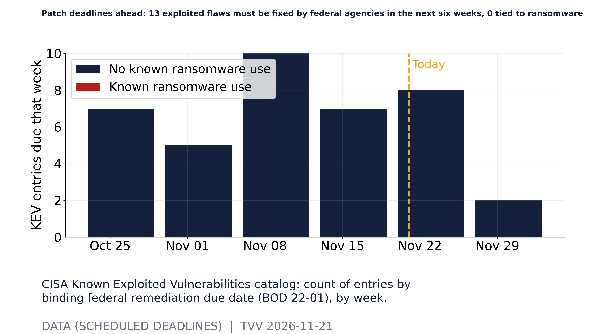
Patch deadlines ahead: 13 exploited flaws must be fixed by federal agencies in the next six weeks, 0 tied to ransomware. CISA Known Exploited Vulnerabilities catalog: count of entries by binding federal remediation due date (BOD 22-01), by week. [Data (scheduled deadlines); data as of catalog 2026-11-20] Source: cisa.gov data page
3. Earthquakes and Eruptions
- ★ No qualifying deadly M6+ quake since our last issue: an M6.7 in Peru's Andes and an M6.8 near Timor-Leste were felt widely, with no damage or casualties immediately reported. 2026 has 13 M7+ quakes so far versus a norm of about 15 a year; bettors give 73% to a 14-16 finish (see graph). ABC News · FOX Weather · USGS · Polymarket
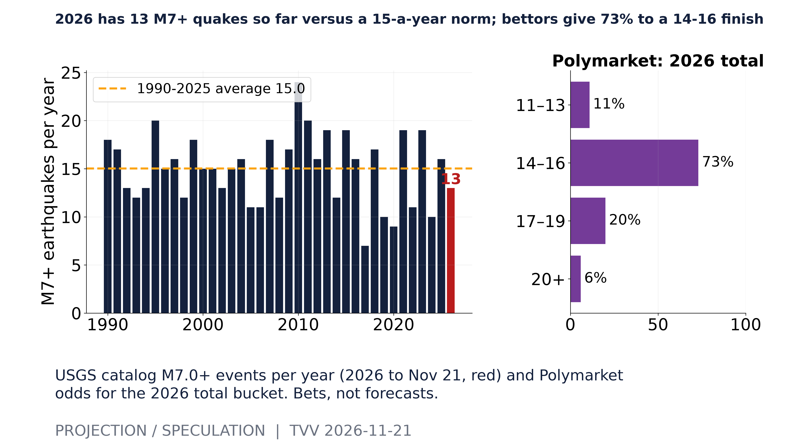
2026 has 13 M7+ quakes so far versus a 15-a-year norm; bettors give 73% to a 14-16 finish. USGS catalog M7.0+ events per year (2026 to Nov 21, red) and Polymarket odds for the 2026 total bucket. Bets, not forecasts. [Projection/Speculation; data as of USGS to 2026-10-22; odds 2026-11-21 07:44 ET] Source: earthquake.usgs.gov data page
4. Solar / Space Weather
- ★ Geomagnetic outlook: two coronal holes face Earth, but NOAA's 3-day forecast peaks at Kp 4, below the G1 storm level, through Nov 24; the 30-day Ap high was 24 on Oct 31 (see graph). The House held a hearing on space-weather readiness this week. SpaceWeatherLive · NOAA SWPC · Legis1
- ★ Long-horizon warning: the north magnetic pole keeps drifting toward Siberia (NOAA NCEI model). No one can predict the timing of a sudden geomagnetic shift; Michael Hentschel's own view is 2035 at the earliest, with critical earth changes along the way. NOAA NCEI
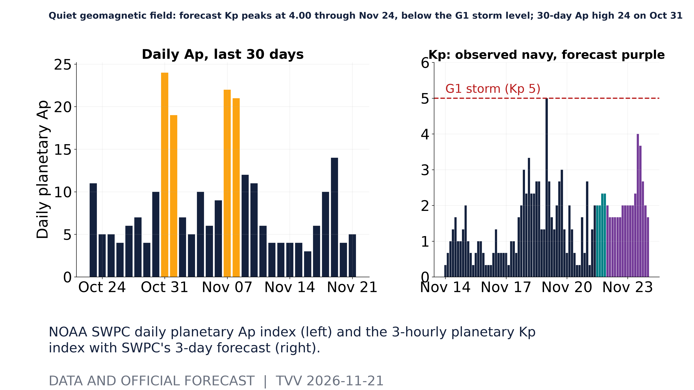
Quiet geomagnetic field: forecast Kp peaks at 4.00 through Nov 24, below the G1 storm level; 30-day Ap high 24 on Oct 31. NOAA SWPC daily planetary Ap index (left) and the 3-hourly planetary Kp index with SWPC's 3-day forecast (right). [Data and official forecast; data as of SWPC issued 2026-11-22] Source: services.swpc.noaa.gov data page
5. Critical Infrastructure / Transportation Disruptions
- ★ Grids under attack abroad: The Times of India reports an alleged Iranian attack on an Arab state's power grid, with fire, blast and outage (unconfirmed); Drop Site News reports Sudan's grid near collapse after strikes on electricity stations; Russian strikes on Ukraine's grid are intensifying before winter. Times of India · Drop Site News · ABC News
- ★ US outage anxiety: Stateline reports national outages and emergency alerts are feeding doomsday theories; the Cato Institute argues against blaming AI for the recent outages, while the Milwaukee Independent sees a convergence of AI risk, cyber threats and corporate negligence. Stateline · Cato Institute · Milwaukee Independent
- ★ Data-center backlash priced as a 2027-28 risk: Polymarket gives about 31% odds that each of Indiana, Louisiana, Missouri and Oklahoma enacts a data-center moratorium by 2028, under 3% this year (see graph). Polymarket
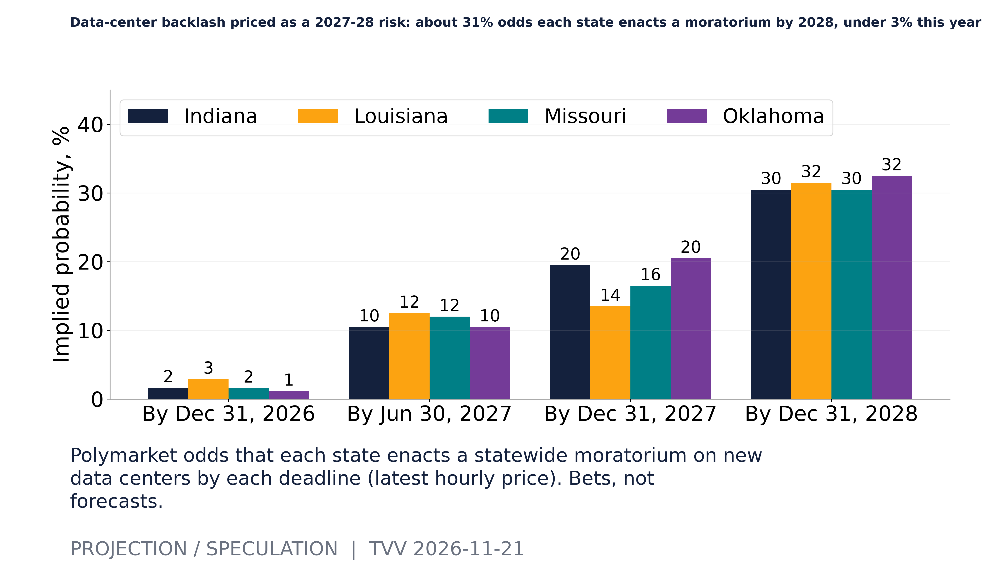
Data-center backlash priced as a 2027-28 risk: about 31% odds each state enacts a moratorium by 2028, under 3% this year. Polymarket odds that each state enacts a statewide moratorium on new data centers by each deadline (latest hourly price). Bets, not forecasts. [Projection/Speculation; data as of 2026-11-21 07:44 ET] Source: polymarket.com data page
6. Econo-Metrics
- ★ Fed hawks dig in: Governor Cook says rate hikes are needed to lower high inflation and questions whether one is enough; Philadelphia Fed's Paulson argues for deliberate hikes. Trump again urged the Fed to cut. Bettors put a December hike at 90.5% (see PREDICTIONS graph). Reuters · American Banker · The Hill · Polymarket
- ★ Flight to safety: the 10-year Treasury yield fell to 4.91% from 5.15% a week earlier as Treasuries headed for their longest rally in five months, and mortgage rates eased with the selloff. Yahoo Finance · Bloomberg · RealEstateNews
- ★ Jobs per jobseeker: 1.06 job openings per unemployed person in September, down from 2.04 in March 2022 and below the 2019 average of 1.19 (see graph). Weekly jobless claims rose unexpectedly to 203,000. FRED/BLS · FRED · WSJ
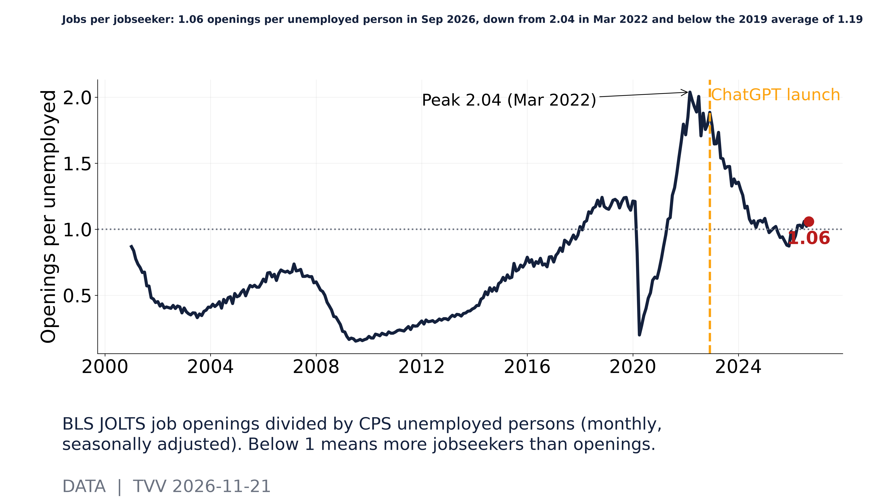
Jobs per jobseeker: 1.06 openings per unemployed person in Sep 2026, down from 2.04 in Mar 2022 and below the 2019 average of 1.19. BLS JOLTS job openings divided by CPS unemployed persons (monthly, seasonally adjusted). Below 1 means more jobseekers than openings. [Data; data as of 2026-09] Source: fred.stlouisfed.org data page
7. Epidemic / Bio-Metrics
- ★ Measles deaths: Virginia reported its first measles-related death of 2026, a child, and Pennsylvania its eighth; CIDRAP says US cases near 6,000 with a triple-digit jump in Wisconsin. The CDC count is 5,838 and bettors give 94% to 7,000+ cases this year, up from 52% a month ago (see graph). ABC News · AHA · CIDRAP · CDC · Polymarket
- ★ Bird flu spreads in poultry: Delaware reported a presumptive positive in a Sussex County commercial flock; WPEC reports a two-county quarantine and a cull of nearly 1.8 million chickens; a routine wastewater sample in Kittitas County, Washington tested positive. State of Delaware · WPEC · FOX 13 Seattle
- ★ Ebola containment: Uganda and South Sudan are stepping up efforts to keep out the DR Congo outbreak, and several countries introduced temporary Ebola-related entry restrictions. CIDRAP · Fragomen
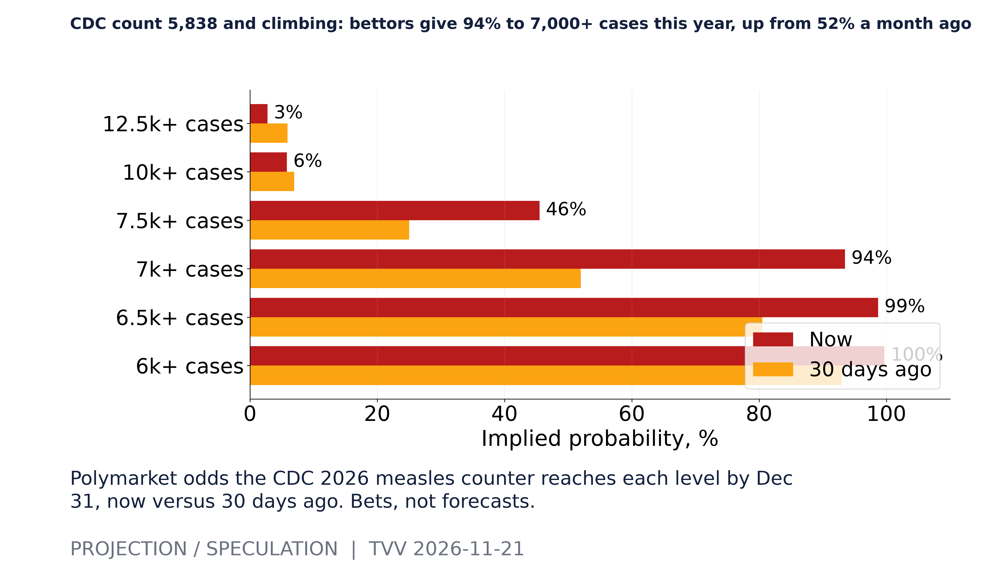
CDC count 5,838 and climbing: bettors give 94% to 7,000+ cases this year, up from 52% a month ago. Polymarket odds the CDC 2026 measles counter reaches each level by Dec 31, now versus 30 days ago. Bets, not forecasts. [Projection/Speculation; data as of CDC update November 19, 2026; odds 2026-11-21 07:44 ET] Source: polymarket.com data page
8. Gold and Silver and Commodities
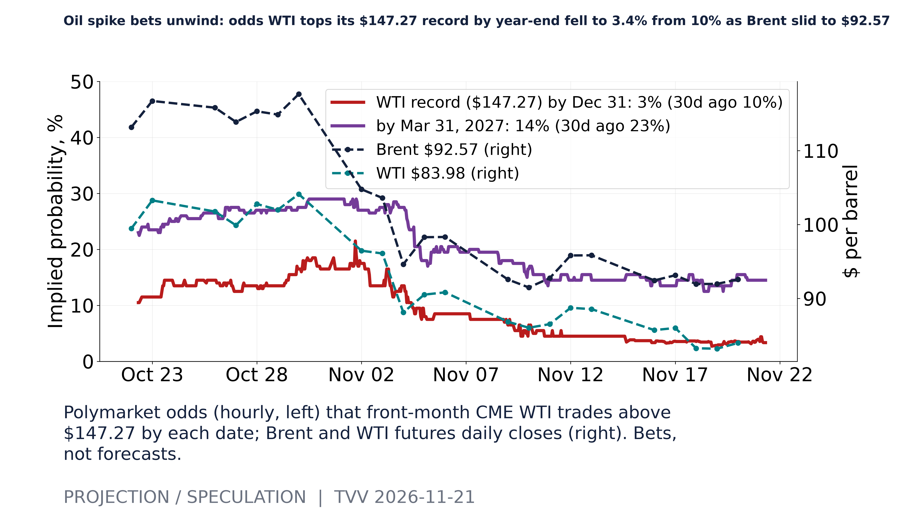
Oil spike bets unwind: odds WTI tops its $147.27 record by year-end fell to 3.4% from 10% as Brent slid to $92.57. Polymarket odds (hourly, left) that front-month CME WTI trades above $147.27 by each date; Brent and WTI futures daily closes (right). Bets, not forecasts. [Projection/Speculation; data as of futures 2026-11-20; odds 2026-11-21 07:44 ET] Source: polymarket.com data page
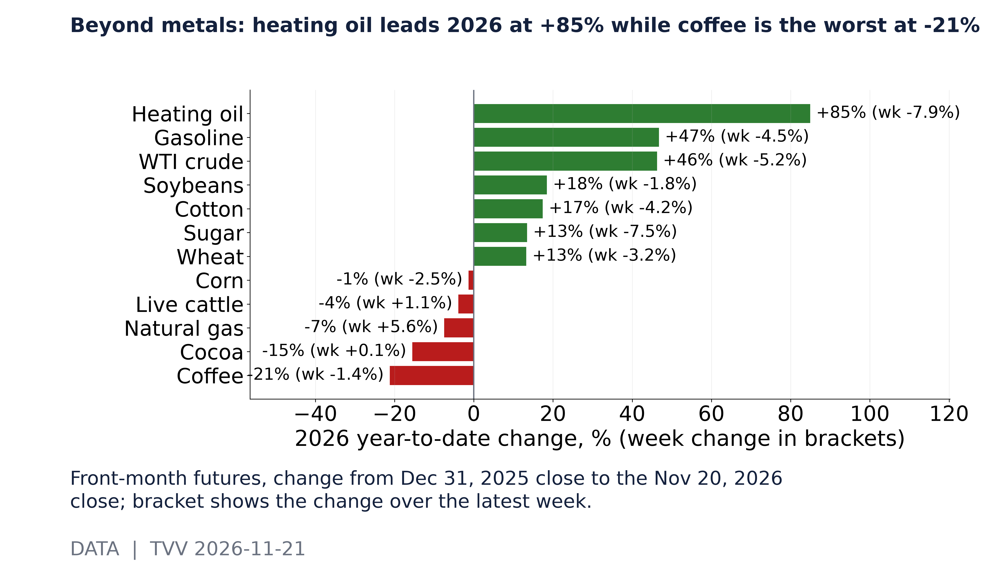
Beyond metals: heating oil leads 2026 at +85% while coffee is the worst at -21%. Front-month futures, change from Dec 31, 2025 close to the Nov 20, 2026 close; bracket shows the change over the latest week. [Data; data as of 2026-11-20] Source: finance.yahoo.com data page
9. Stock Averages and Nasdaq Major Movers
- ★ Worst week in over a year: the S&P 500 fell 8.6% on the week to 6,910.39 (-3.70% Friday) and now sits 11.6% below its 2026 high, a correction; the Nasdaq-100 (QQQ) fell 10.5% and erased its 2026 gains; the Dow also entered a correction. Chips (SMH) fell 17.8% on the week and are 40% off their high (see graph). Yahoo Finance · Yahoo Finance · NBC News · CNN
- ★ Weekly leaders and laggards: Nvidia -22.9% to $125.53, Alphabet -10.3%, Microsoft -7.5%, small caps (IWM) -7.5%, Apple -3.8%; defensive utilities (-3.1%) and staples (-2.0%) fell least, and long Treasuries (TLT) rose 2.6%. Yahoo Finance · Yahoo Finance
- ★ Fear curve inverts: the VIX jumped 86% on the week to 35.89, above the 3-month VIX at 30.94 (ratio 1.16), a sign traders expect near-term stress to exceed longer-term (see graph). NPR calls it a "really bad week" for the AI boom; Seeking Alpha argues the worst may be yet to come. Yahoo Finance · NPR · Seeking Alpha
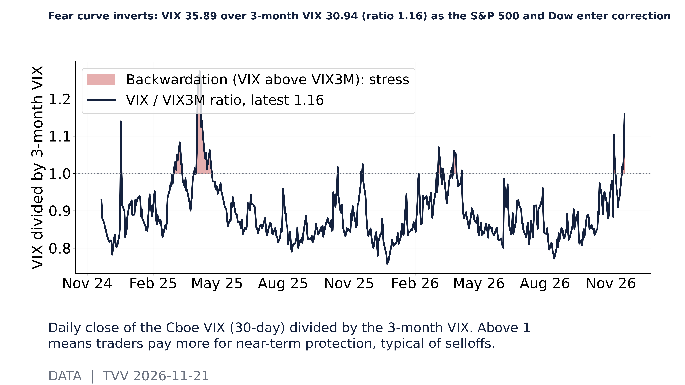
Fear curve inverts: VIX 35.89 over 3-month VIX 30.94 (ratio 1.16) as the S&P 500 and Dow enter correction. Daily close of the Cboe VIX (30-day) divided by the 3-month VIX. Above 1 means traders pay more for near-term protection, typical of selloffs. [Data; data as of 2026-11-20] Source: finance.yahoo.com data page
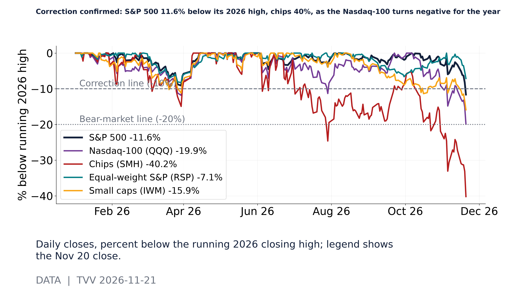
Correction confirmed: S&P 500 11.6% below its 2026 high, chips 40%, as the Nasdaq-100 turns negative for the year. Daily closes, percent below the running 2026 closing high; legend shows the Nov 20 close. [Data; data as of 2026-11-20] Source: finance.yahoo.com data page
10. Polymarket and Kalshi Sentiment Highlights
- ★ Bettors now price an AI bust: Polymarket odds of an "AI bubble burst" by Dec 31 jumped to 69.5% from 9.3% a month ago as NVDA fell 48% from its two-year closing high (see graph). Near term, the market already treats a bust as the base case for year-end. Polymarket · Yahoo Finance
- ★ Hike bets versus yield bets: a December Fed hike at 90.5% while odds the 10-year reaches 5.3% fell to 27.5% from 50% a month ago (see graph). Near term, bettors expect the Fed to tighten even as the bond market's flight to safety caps long yields. Polymarket
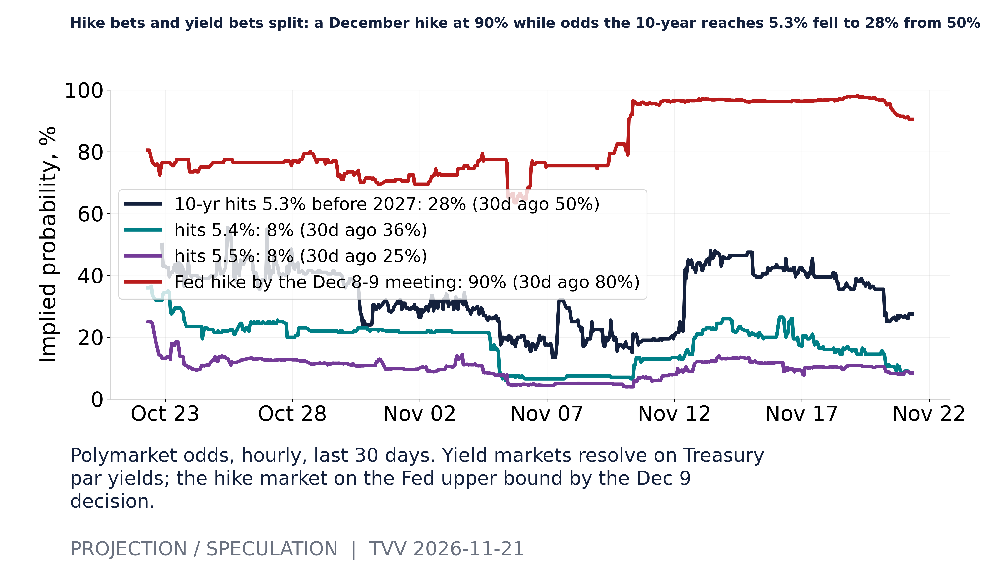
Hike bets and yield bets split: a December hike at 90% while odds the 10-year reaches 5.3% fell to 28% from 50%. Polymarket odds, hourly, last 30 days. Yield markets resolve on Treasury par yields; the hike market on the Fed upper bound by the Dec 9 decision. [Projection/Speculation; data as of 2026-11-21 07:44 ET; 10-yr 2026-11-19] Source: polymarket.com data page
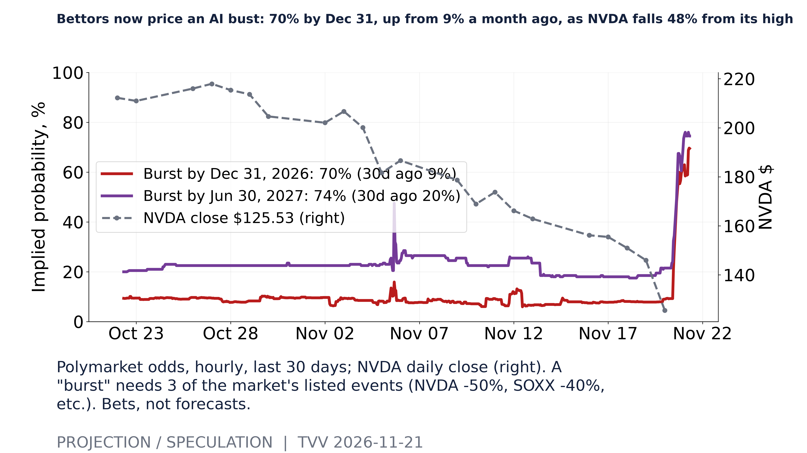
Bettors now price an AI bust: 70% by Dec 31, up from 9% a month ago, as NVDA falls 48% from its high. Polymarket odds, hourly, last 30 days; NVDA daily close (right). A "burst" needs 3 of the market's listed events (NVDA -50%, SOXX -40%, etc.). Bets, not forecasts. [Projection/Speculation; data as of 2026-11-20 close; odds 2026-11-21 07:44 ET] Source: polymarket.com data page
11. Tech-Metrics
- ★ Nvidia governance turmoil: the WSJ examines the danger of Jensen Huang's handshake deals; CFO Colette Kress will lead the first earnings call after Huang's ouster; The New York Times reports Alice Huang, accused of spying on Nvidia's CEO, is linked to firms with ties to China's military. Axios says Nvidia shares plunged as the Anthropic IPO failed to stop the AI selloff. WSJ · WSJ · New York Times · Axios
- ★ The crown flips: bettors now give Apple 93.8% to be the world's largest company at year-end and Nvidia 2.4%, down from 67.5% a month ago (see graph). Near term, the market no longer expects Nvidia to regain the top spot this year. Polymarket
- ★ Anthropic after day two: shares closed at $88.91, above the $83 IPO price, after a 13% day-two drop that Reuters says left retail buyers with losses; The Information ties the slide to banks exercising the greenshoe, and the WSJ says the blame game has begun. Odds of a $2 trillion valuation by Dec 31 fell to 12.5% (see graph). Reuters · The Information · WSJ · Polymarket
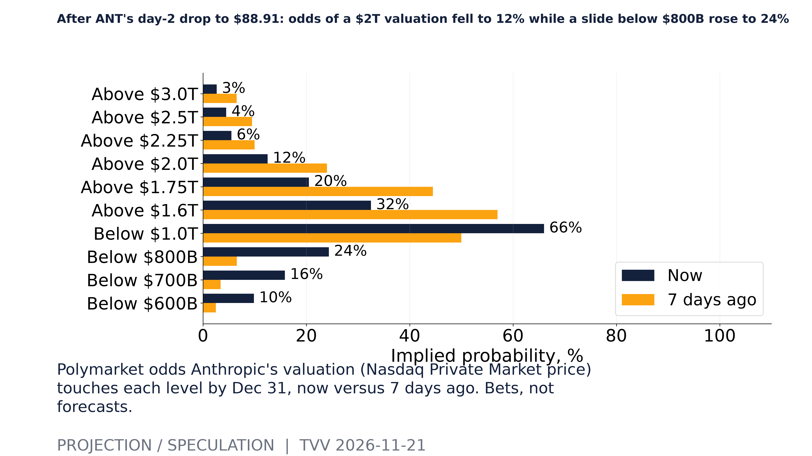
After ANT's day-2 drop to $88.91: odds of a $2T valuation fell to 12% while a slide below $800B rose to 24%. Polymarket odds Anthropic's valuation (Nasdaq Private Market price) touches each level by Dec 31, now versus 7 days ago. Bets, not forecasts. [Projection/Speculation; data as of 2026-11-21 07:44 ET; ANT close 2026-11-20] Source: polymarket.com data page
12. AI Hypergrowth Risks
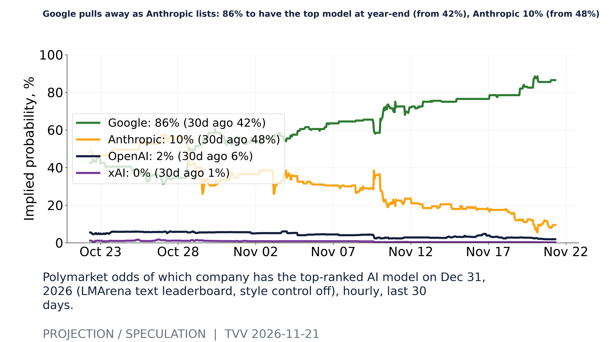
Google pulls away as Anthropic lists: 86% to have the top model at year-end (from 42%), Anthropic 10% (from 48%). Polymarket odds of which company has the top-ranked AI model on Dec 31, 2026 (LMArena text leaderboard, style control off), hourly, last 30 days. [Projection/Speculation; data as of 2026-11-21 07:44 ET] Source: polymarket.com data page
13. Finance Bubble Derivatives Risk
- ★ AI debt strain: ING's $500 million data-center loan auction stalled on low bids and shifted to one-on-one sales, while SpaceX closed $32 billion of AI-chip debt (ET Datacenters reports a $44 billion GPU financing led by Apollo and Goldman), with IBD flagging yield and orbital-deployment concerns. Bloomberg · Taipei Times · ET Datacenters · Investor's Business Daily
- ★ Private credit sized: an official count puts private credit at 7.1% of corporate debt; Fortune reports private-equity-backed companies face a $300 billion debt wall and are eyeing retirement accounts for an exit. ABF Journal · Fortune
- ★ Crypto leverage: Bitcoin fell to a two-year low below $57,000 overnight, wiping out $2.4 billion of leveraged bets (CoinDesk); Strategy (MSTR) fell 30.3% on the week to $77.80 with a reported $14 billion paper loss. Bettors put 66.5% on Bitcoin hitting $55,000 before 2027, up from about 10% a month ago (see graph). Reuters · CoinDesk · Yahoo Finance · Polymarket
- ★ Short-volatility pain: the short-VIX ETF SVIX is 49% below its high after a 14% Friday drop, while the long-volatility UVXY jumped 22% (see graph). Yahoo Finance
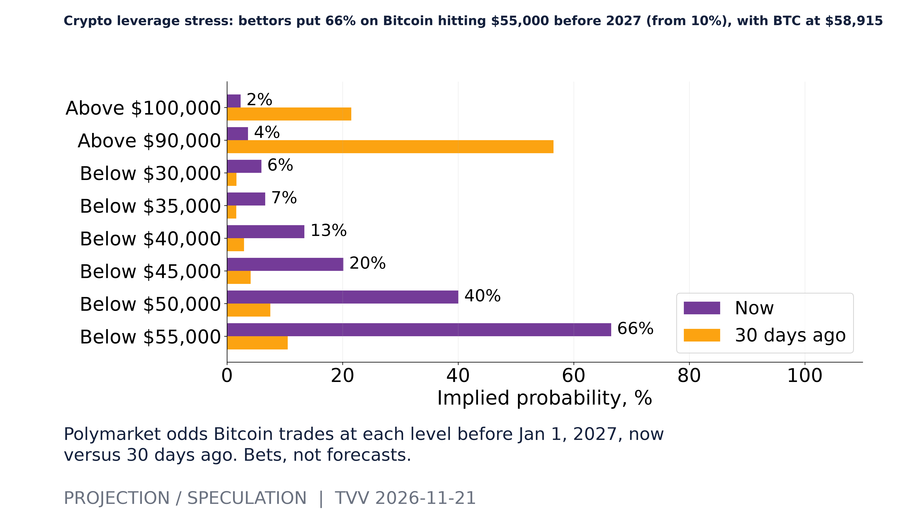
Crypto leverage stress: bettors put 66% on Bitcoin hitting $55,000 before 2027 (from 10%), with BTC at $58,915. Polymarket odds Bitcoin trades at each level before Jan 1, 2027, now versus 30 days ago. Bets, not forecasts. [Projection/Speculation; data as of BTC 2026-11-20; odds 2026-11-21 07:44 ET] Source: polymarket.com data page
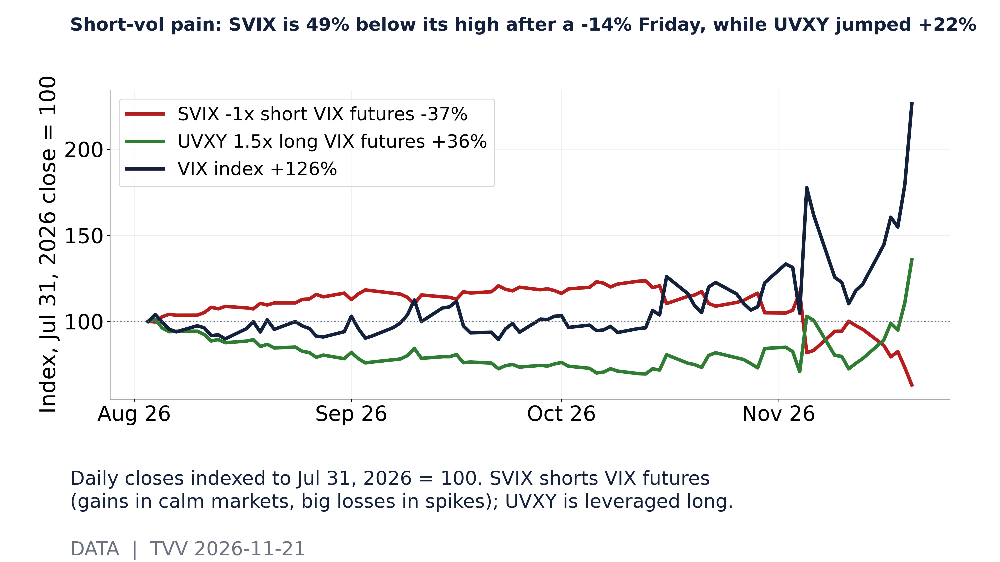
Short-vol pain: SVIX is 49% below its high after a -14% Friday, while UVXY jumped +22%. Daily closes indexed to Jul 31, 2026 = 100. SVIX shorts VIX futures (gains in calm markets, big losses in spikes); UVXY is leveraged long. [Data; data as of 2026-11-20] Source: finance.yahoo.com data page
Prioritized Risk Summary November 21, 2026
| Sections Ranked for Importance Today | |
|---|---|
| STOCKS | S&P 500 and Dow in correction after worst week in over a year; Nasdaq negative for 2026 |
| GEOPOLITICS | Russian missiles land in NATO Poland; Hormuz attacks at wartime high |
| PREDICTIONS | Bettors put AI-bubble-burst odds at 70% by year-end, up from 9% a month ago |
| DERIVATIVES | Bitcoin at two-year low wipes out $2.4B of bets; data-center loan auction stalls |
| TECHNOLOGY | Nvidia down 23% on the week amid governance turmoil; Apple now favored as largest |
| ECONOMY | Fed hawks push hikes as Treasury yields fall on haven demand |
| TERROR | FBI, DHS, TSA warn airlines of al-Qaeda calls for copycat hijackings |
| COMMODITY | Gold down 9.5% on the week, copper in bear market, oil falls a third week |
| HEALTH | Virginia reports first measles death of 2026; US cases near 6,000 |
| AI BOOST | Google seen holding the top AI model; boardroom AI focus shifts to cyber |
| INFRASTRUCT | Strikes push Sudan's and Ukraine's grids toward collapse before winter |
| SPACE | Two coronal holes face Earth; forecast stays below G1 storm level |
| QUAKES | M6.7 Peru and M6.8 Timor-Leste quakes with no damage reported |
TECHVESTVENTURES ACTION-ALERT — November 21, 2026 see all graphs click TVV Risk Center
EDITOR — Michael Hentschel
Most news events require or spawn no action or reaction, some (but not many) are or become warnings. We draw attention to substantial lifestyle risks and market risks in particular, some created by Mid-Term Vote anxieties, Middle East tensions, vast over-indebtedness globally, and other events we track. Longer term but capable of causing sudden power surges as serious as the Carrington Event. Climate instability occasioned by long-term cyclical solar electro-magnetic flares, is becoming much more prominent and even more likely. New AI predictive analytics and pattern seekers are pointed in some of these directions, and we monitor imminent likelihood. Some readers might hedge and others might see opportunity. The above is not investment advice.